爱五子棋打谱软件2.2实用使用说明
#1 爱五子棋打谱软件2.2实用使用说明作者：有志青年 发表时间：2011-10-30 20:43:37
对应软件下载：爱五子棋打谱软件2.2版本发布，可计算VCF，免杀
我们就讲实用的吧
一、全面认识
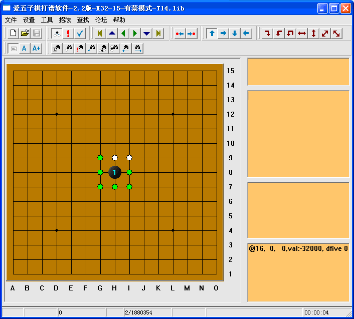
这是全貌，下面来对软件界面做一个区域划分
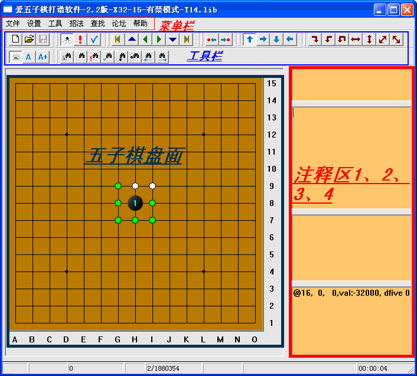
二、菜单罗列
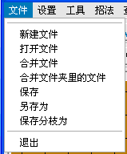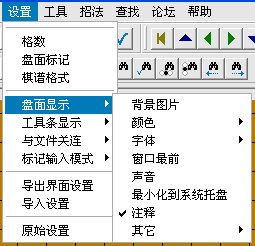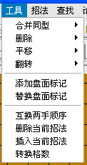
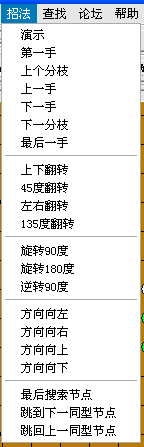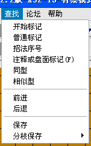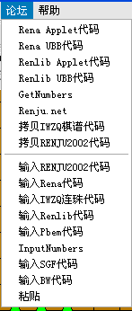
三、实用功能
（文件菜单功能操作）
1、如何打开五子棋棋谱：
【简介】现在流行的五子棋谱有这样两类：
棋谱文件，就如一份word文档一样，你从某处下载得到的，以文件的形式存在。
棋谱文件，目前流行的有：
lib棋谱（多分枝棋谱，由很多棋谱汇合在一起，这是五子棋独有的棋谱格式）
pos棋谱（由黑石软件生成的五子棋文件，单分支，一个文件一张谱）
sgf棋谱（本站棋谱库和习题库生成的棋谱文件使用此格式）
其他格式的棋谱已经不多见
棋谱代码，只是一段代码，你刚刚从某处复制得到的，不是文件的形式。
棋谱代码，目前流行的有：
iwzq棋谱代码（其实就是当前盘面的棋子坐标序列，简单实用，单分支）
rena ubb代码（一种多分枝的棋谱代码，也因多分枝，代码量由棋谱大小而定）
renlib ubb代码（其实就是加了空格的iwzq棋谱代码）
【操作】
打开棋谱文件，选择文件菜单下的“打开”，或者工具栏中的“打开”
打开棋谱代码，选择论坛菜单下的对应代码格式即可。
【注意】超大的rena代码可以保存到txt文件中，然后在用打开棋谱文件的方法打开。
2、新建棋谱，保存棋谱
【操作】直接在棋盘上打谱，点击保存，取文件名即可，其中“保存分支为”可将多分枝棋谱中的当前分支单独保存为一个文件。
3、合并文件、合并文件夹里的文件
【简介】这个功能是将多个棋谱文件（格式不限）合并到一个棋谱中。
【操作】选择对应的棋谱文件或文件夹即可，此功能对于合并爱五子棋网棋谱库或习题库中下载的棋谱、习题有你非常满意的效果，上千的棋谱瞬间合并成一个文件。
（设置菜单功能操作）
4、格数、盘面标记、棋谱格式
【简介】爱五子棋打谱软件2.2可以设置20线以内的棋盘，如19路和围棋一样的棋盘，盘面标记和棋谱格式不用修改。
5、盘面显示
【操作】“背景图片”，这算是全面美化本软件的功能了。给个好看的 棋盘棋子.rar
棋盘棋子.rar
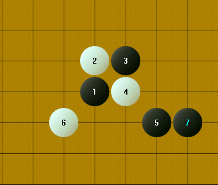
设置如下：
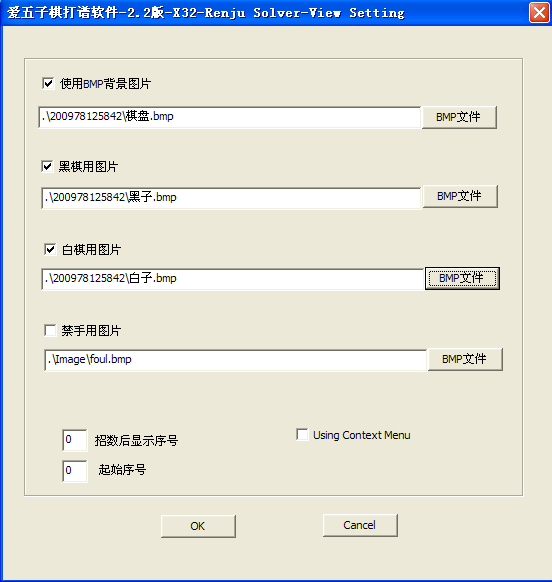
#2 Re:爱五子棋打谱软件2.2实用使用说明作者：有志青年 发表时间：2011-10-30 21:14:02
（工具菜单功能操作）
7、合并同型、删除
【简介】之所以合并，因为这两个工具都是将棋谱做简要整理，再直白一些说就是简化当前的多分支的庞大棋谱
【操作】无特殊异义描述，可自行根据详细的中文菜单操作
8、平移、翻转
【简介】要特别说明的是这里的“翻转”和“招法”菜单中的相关翻转是不一样的，这里的翻转之后，不仅棋型发生了变化，棋谱代码也发生了变化，平移也一样。
其余工具参照直白的中文菜单，值得说明的是“转换格数”无效
（招法菜单功能操作）
9、演示
【简介】这个菜单主要是配合orc课件来操作的
本菜单下其余功能仅是显示发生了变化，棋谱代码不发生变化，大部分可以通过工具栏中的按钮来操作。
（查找菜单功能操作）
10、开始标记、普通标记
【简介】等询问作者后做补充
11、招法序号
【简介】这是一个非常非常重要的功能，可以理解成“文件”菜单下“合并文件夹里的文件”的逆操作。
【操作】
打开多分枝棋谱（一个由很多对局合并成的lib棋谱）
选择“招法序号”菜单，弹出对话框，啥都不操作，直接确定，以空恨的云月终结谱为例，此时右边第三个注释框中显示“查找到 372508 个局面”
你想将这些局面单独保存吗？想，就继续
选择“分枝保存”菜单，选择你喜欢的文件格式，建议就lib，
指定文件夹，一定要指定个文件夹哟，否则上万个棋谱，不把你累死？
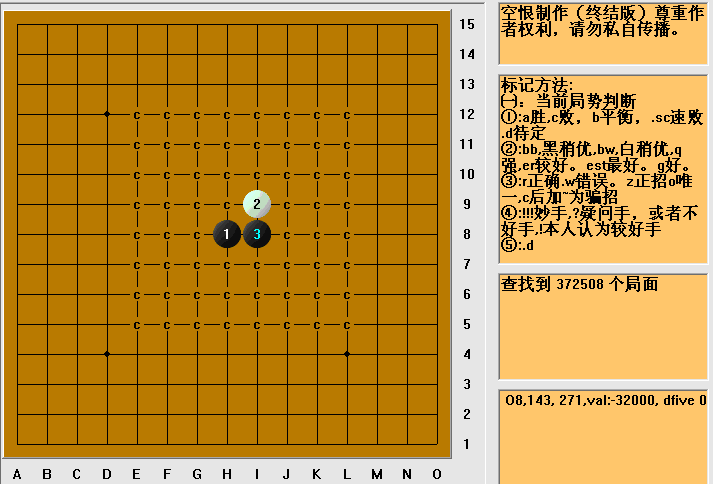
12、注释或盘面标记
【简介】这个功能实用，可以迅速查找到庞大的棋谱中某个已经做过标记的局面
13、相似型
【简介】没有讲同型，因为比较难找到，相似型就容易多了，我们来看这个局面，花月的一个变化
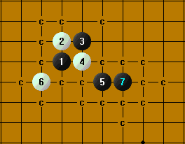
停留在这个局面上，选择菜单“相似型”你会找到三个局面，其中有个峡月开局的变化和花月此局面是相似型，很有用的功能。
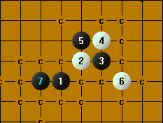
14、前进/后退
【简介】啥作用？就是配合相似型以及其他查找功能所找出的很多局面的。怎么配合？还以相似型为例，选择“前进”到下一个局面，“后退”到前一个局面。
［ 虎哥 于 2011-11-21 12:01:38 时花20金币送鲜花一朵］
#3 Re:爱五子棋打谱软件2.2实用使用说明作者：有志青年 发表时间：2011-10-30 21:36:22
（论坛菜单功能操作）
15、总体概况
【简介】论坛菜单下的众多代码功能分成两大块，一组是输出、一组是输入，中间有个分隔线。在输出功能组中，目前常用的是“Rena UBB代码”和“拷贝IWZQ棋谱代码”，其余的已经较少获得网站的支持了，对应的输入功能组中，也是同样。
16、关于“Rena UBB代码”
【简介】这是一种多分枝的棋谱代码，且可以在代码中携带中文注释，因此是一种很强大的五子棋代码，这么优秀，为啥大家还不够熟悉呢？因为要想显示出来，需要支撑此代码的网站有对应的class文件，而浏览棋谱的机器需要安装java虚拟机（参见论坛中看互动谱ShowPost.asp?ThreadID=303）
【操作】
要想你的中文注释对应你的每一步棋，那么请参阅下图，不要输错的注释区的文本框。
一个很庞大的棋谱，你也许只希望展示其中的一个小小的局部，那么就停留在那个局部盘面，再选择“Rena UBB代码”菜单，复制。
在爱五子棋网发帖框中，粘贴你复制来的代码，并提交，即可。
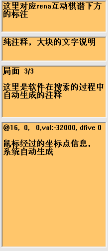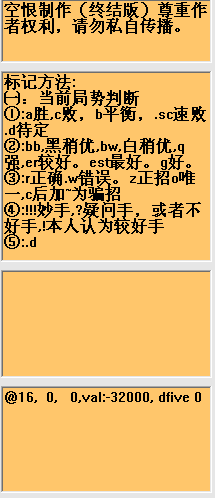
17、关于“IWZQ棋谱代码”
【简介】这是一种单分支的棋谱代码，代码中仅含有从1到当前局面的棋谱的坐标点信息，此代码简单实用，便于交流。目前爱五子棋网的论坛交流、棋谱库、习题库，均使用此种代码。
【操作】
输出：
盘面上为你想交流的局面，选择菜单“拷贝IWZQ棋谱代码”，没啥反应，其实已经复制好了
在爱五子棋网发帖框的功能按钮中，点击 ，在弹出的对话框中粘贴（CTRL+V)并提交即可，如下图位置粘贴代码
，在弹出的对话框中粘贴（CTRL+V)并提交即可，如下图位置粘贴代码
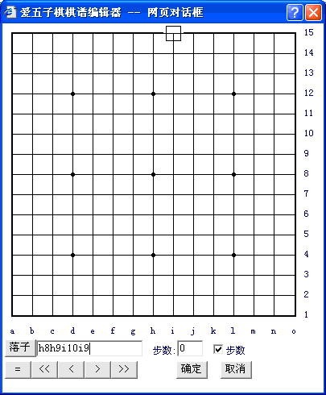
输入：
你可以从爱五子棋网的棋谱库、习题库以及论坛交流的棋谱中点击“复制棋谱”按钮，即可获得相应的棋谱代码
选择菜单“输入IWZQ连珠代码”，之后在弹出的对话框中粘贴（CTRL+V)并确定即可。
［此帖子已被 有志青年 在 2011-10-30 21:36:55 编辑过］
#4 Re:爱五子棋打谱软件2.2实用使用说明作者：极地剑客 发表时间：2011-11-3 22:19:29
我认为查到到多少多少局面这个提示功能相当实用.#5 Re:爱五子棋打谱软件2.2实用使用说明作者：极地剑客 发表时间：2011-11-3 22:20:02
可以抛弃俄罗斯数据库软件了~#6 Re:爱五子棋打谱软件2.2实用使用说明作者：忧郁的双眼 发表时间：2011-11-5 18:33:40
极地，你有东西就不给我。#7 Re:Re:爱五子棋打谱软件2.2实用使用说明作者：极地剑客 发表时间：2011-11-5 22:10:36
引用：毛线吧~
原文由 忧郁的双眼 发表于 2011-11-5 18:33:40 :
极地，你有东西就不给我。
#8 Re:爱五子棋打谱软件2.2实用使用说明作者：黑豆 发表时间：2011-12-28 10:28:33
很好的软件，使用中#9 Re:爱五子棋打谱软件2.2实用使用说明作者：水城棋人 发表时间：2012-4-6 11:51:18
学习了，谢谢楼主
#10 Re:爱五子棋打谱软件2.2实用使用说明作者：朵儿 发表时间：2012-5-6 11:21:54
谢谢楼主！！！#11 Re:爱五子棋打谱软件2.2实用使用说明作者：老张叔叔 发表时间：2012-6-2 19:07:24
好软件支持感谢#12 Re:爱五子棋打谱软件2.2实用使用说明作者：爱因思谈 发表时间：2013-5-17 23:24:48
很好的软件，不过我现在用的多的是renju3.7